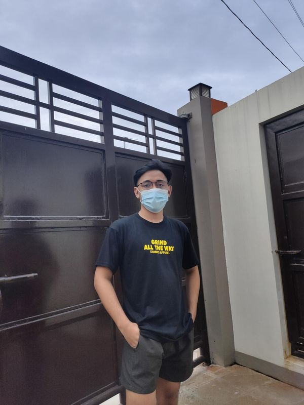

ABOUT ME


“Family means having someone to love you unconditionally in spite of you and your shortcomings. Family is loving and supporting one another even when it's not easy to do so. It's being the best person you could be so that you may inspire your love ones. My mother is Marites S . Tano, the most hardworking and caring person My father is Alejandro R. Tano , a hardworking father who always thinks of his family first. and I have 3 siblings name John Carlo, Charles John and the youngest John Lloyd.
A hobby is considered to be a regular activity that is done for enjoyment, it is something that like to do or favorite pasttime. My Hobbies are listening to Music playing sports, and other online games.
My Strength and weaknesses in terms of IT field. Mostly when it comes to the IT field my weaknesses overflow more than my strengths. Taking a course in BSIT without any experience is really hard especially when it comes to coding. You need to memorize all the key words and try not to miss a single mistake if you don’t want to ruin it. My strength Patience is the key to success no matter how long the tutorials I always finish every last second and word of it. So the weaknesses of mine will be filled by a lot of strengths when it comes to the IT field.